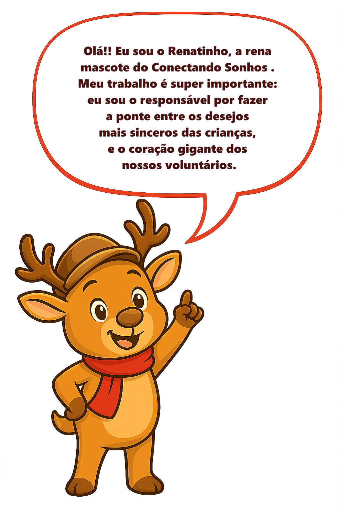
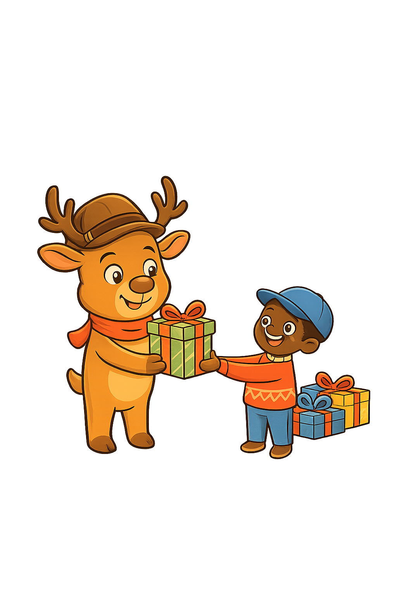

O Conectando Sonhos
O Conectando Sonhos é uma iniciativa criada por estudantes de Desenvolvimento de Software Multiplataforma da Faculdade de Tecnologia Dr. Thomaz Novelino – FATEC com o propósito de aproximar pessoas dispostas a ajudar de crianças atendidas por organizações sociais e instituições. A plataforma nasce como um espaço onde essas instituições podem cadastrar cartas escritas pelas crianças, compartilhando sonhos, desejos simples e histórias cheias de esperança. Cada carta representa mais do que um pedido: carrega sentimentos sinceros, expectativas e a oportunidade de viver um momento especial por meio da solidariedade.
Por meio da plataforma, instituições que trabalham diretamente com crianças realizam o cadastro e submetem as cartinhas ao site, garantindo que cada história seja apresentada de forma organizada e transparente. A partir disso, qualquer pessoa pode acessar a plataforma, ler as cartinhas das crianças e escolher um pedido para adotar. O processo é simples, seguro e humano, permitindo que doadores participem ativamente de ações solidárias e contribuam para transformar pequenos desejos em grandes momentos de alegria.
Mais do que um site, o Conectando Sonhos é um espaço de conexão entre comunidades, instituições e pessoas que acreditam no poder de fazer o bem. A plataforma permite a realização de diferentes campanhas ao longo do ano, criando oportunidades contínuas para espalhar solidariedade e esperança. A cada carta adotada, uma nova história ganha um capítulo especial, lembrando que gestos simples têm o poder de iluminar vidas e fortalecer os laços de cuidado e empatia dentro da sociedade.
Como Funciona?
A Magia Acontece Quando Você Doa!



Impacto do Projeto
Sonhos Realizados
No Conectando Sonhos, cada sonho realizado começa com um pequeno gesto: uma criança escrevendo sua carta e depositando nela toda a esperança de ser lembrada. Para muitas delas, o pedido vai além do objeto desejado, é a vontade de viver um momento especial, de sentir que alguém se importa, de acreditar que gestos de carinho realmente podem transformar sua vida. Quando essas cartas chegam ao site, elas ganham uma chance real de se transformar em felicidade.
Quando um voluntário ou doador escolhe uma carta, o sonho começa a tomar forma. O site permite que esses pedidos encontrem quem deseja ajudar, e assim cada história encontra seu próprio herói. Um simples brinquedo, uma roupa nova, um material escolar ou até um gesto simbólico, tudo se transforma em algo muito maior quando chega às mãos de uma criança que aguardou com o coração cheio de expectativa. A plataforma faz essa ponte acontecer de forma organizada, carinhosa e segura, garantindo que nenhum pedido seja apenas um número, cada sonho importa.
E o momento mais especial é quando o presente é entregue. É ali que o sonho se realiza de verdade: na emoção de saber que alguém dedicou tempo e atenção para tornar aquela experiência inesquecível. Para essas crianças, não é apenas um presente, é a confirmação de que elas são vistas, amadas e importantes. E para o Conectando Sonhos, cada sonho realizado é o que dá sentido à iniciativa, renovando a missão de espalhar esperança e alegria a cada nova campanha.